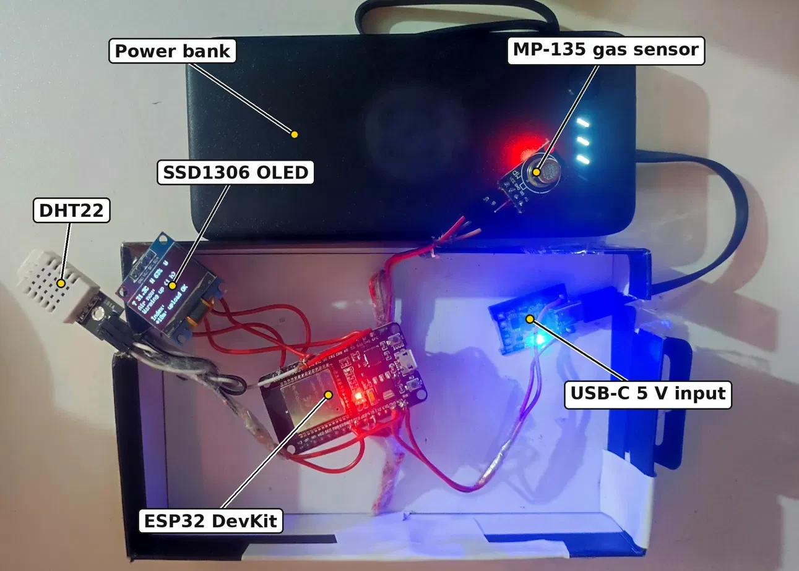

About
I build low-cost IoT systems that run machine learning directly on microcontrollers. My work spans the full stack: designing and hand-wiring ESP32 hardware, calibrating sensors, collecting long real-world deployments, training compact models, exporting them to C, and benchmarking them on the device. I evaluate this work carefully, with nested grouped cross-validation, multiple seeds, and Wilcoxon tests with Holm correction.
The questions I am working on next:
- Reliable TinyML on cheap sensors: models that stay accurate as sensors drift, age and respond to humidity
- IoT intrusion detection that generalizes to real networks, not only to the dataset it was trained on
- Explainable, resource-aware ML for devices with kilobytes of memory and microsecond decision budgets
News
- Nov 2026Released an open indoor air quality dataset (46,897 readings from a hand-built ESP32 monitor) on Zenodo.
- Nov 2026Two IoT papers, on TinyML air quality forecasting and on cross-network IoT intrusion detection, are under review at SN Computer Science.
- Jul 2026Paper on environmental sound classification published in the Indian Journal of Computer Science and Technology.
- Jan 2026Completed my BSc in Computer Science & Engineering at Daffodil International University.
Research
Low-Cost Indoor Air Quality Monitoring and Short-Term Forecasting on ESP32 Using a Humidity-Compensated MOS Sensor and TinyML


- Designed and hand-wired an ESP32 + Winsen MP-135 MOS gas sensor + DHT22 monitor and deployed it in an occupied room in Dhaka
- Built a humidity- and temperature-compensated, drift-robust relative Pollution Index with a rolling 3-hour baseline
- Exported a 60-tree LightGBM forecaster to C and ran it on the ESP32, beating a persistence baseline at 2, 5 and 10-minute horizons
Local Labels Beat Public Data: Cross-Network Evaluation of Lightweight and Explainable IoT Intrusion Detectors
- Evaluated five model families and nine microcontroller-sized models on four public NetFlow-v2 datasets, over 10 seeds with Holm-corrected Wilcoxon tests
- Showed that detectors that look excellent within one dataset collapse on other networks (62% of cross-dataset pairs below 0.5 ROC-AUC), and explained why with SHAP and distribution-shift analysis
- With only 1,000 local labels, a tiny depth-4 decision tree beat tuned Random Forest and XGBoost (≤ 0.76 MCC)
Explainable Glaucoma Detection from Retinal Fundus Images
- Compared SVM, XGBoost, DenseNet121 and EfficientNetB3 on ~6,000 fundus images using HOG, LBP and color-histogram features, transfer learning and Grad-CAM
- Deployed the best model in GlaucomaDetect, a Flask web application
Environmental Sound Classification with Optimized ANN and SVM Models
- 80-dimensional MFCC features on UrbanSound8K, tuned with KerasTuner and GridSearchCV
- Deployed as UrbanSoundAI, a Flask app with waveform, Mel-spectrogram and MFCC views
Hardware projects

Smart Water Level Monitor & Automatic Pump Control
ESP32 and ultrasonic sensor show the live water level on an OLED screen. A relay switches the pump on and off automatically, with a buzzer alert and remote monitoring over Blynk IoT.


Obstacle-Avoiding Robot Car
Arduino with a motor driver shield and an ultrasonic sensor on a servo that scans for obstacles and steers around them on its own. Powered by rechargeable 18650 cells with USB-C charging modules.
Publications
- M. A. Mridu, M. M. Kawsar. “Comparative Study of Optimized ANN and SVM Models for Environmental Sound Classification with Practical Web-Based Deployment.” Indian Journal of Computer Science and Technology (INDJCST), Vol. 5, Issue 2, pp. 904–910, 2026. doi:10.59256/indjcst.20260502098 Published
- M. M. Kawsar. “Low-Cost Indoor Air Quality Monitoring and Short-Term Forecasting on ESP32 Using a Humidity-Compensated MOS Sensor and TinyML.” SN Computer Science. Under review
- M. M. Kawsar, M. A. Mridu. “Local Labels Beat Public Data: Cross-Network Evaluation of Lightweight and Explainable IoT Intrusion Detectors.” SN Computer Science. Under review
- M. A. Mridu, M. M. Kawsar. “Comparative Evaluation of Machine Learning and Transfer-Learning-Based Deep Learning Models for Explainable Glaucoma Detection from Retinal Fundus Images.” Network Modeling Analysis in Health Informatics and Bioinformatics. Under review
Education
Daffodil International University, Bangladesh · CGPA 3.48 / 4.00
Collectorate School & College, Rangpur · GPA 5.00 / 5.00
Raipur BL High School, Pirganj, Rangpur · GPA 5.00 / 5.00
Relevant coursework: Big Data and IoT · Microprocessor, Embedded System and IoT · Computer Networks · Information Security · Artificial Intelligence · Data Mining and Machine Learning
Skills
- IoT & embedded
- ESP32, Arduino, Embedded C/C++, circuit design & prototyping, sensor interfacing & calibration, humidity compensation, TinyML, model-to-C export, Blynk IoT
- Machine learning
- Time-series forecasting, gradient boosting, deep & transfer learning, explainable AI (SHAP, Grad-CAM), IoT intrusion detection
- Evaluation
- Nested grouped cross-validation, Wilcoxon tests with Holm correction, MCC, ROC-AUC, Macro-F1
- Libraries
- TensorFlow, Keras, scikit-learn, XGBoost, LightGBM, SHAP, OpenCV, Librosa, Flask
- Languages & tools
- Python, C, C++, Java · Git, Jupyter, Google Colab, VS Code